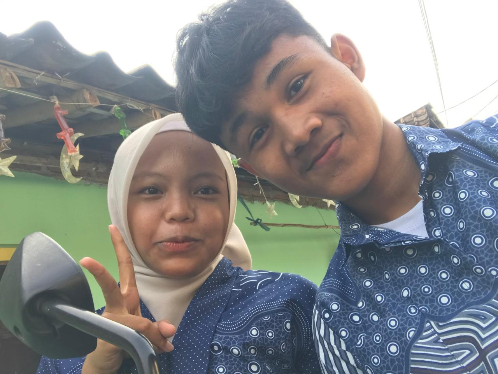

Galeri Kita
Sepuluh foto yang menurut kita paling bahagia.

first kita ketemu
Awal Cerita

penyemangat
Penuh Tawa

burger date
Langkah Bersama

running time
Waktu Berharga
Mixue time
Selalu Ada
kalah si..tapi ada kamu
Hari Bahagia
Study date
Jelajah Momen

mau kondangan dulu yaks
Kehangatan

waktu dmna saling memperbaiki
Kehangatan
EH.. ko cantik
Menatap Depan